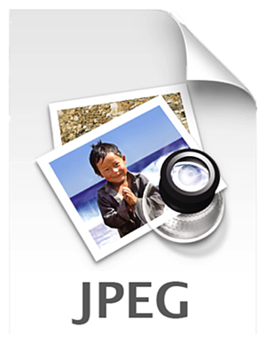
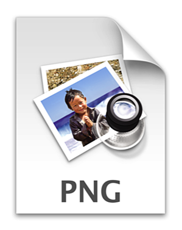
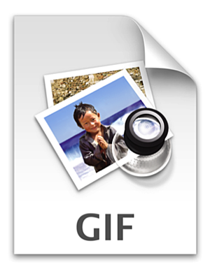
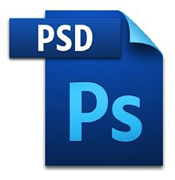
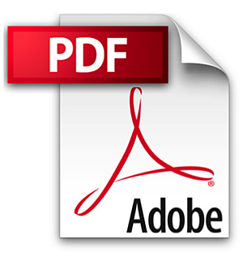
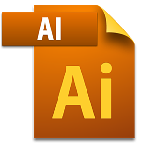
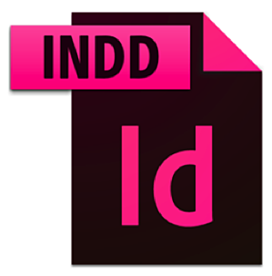
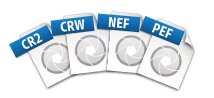

1.7 - Website File Types
Below are a number of file types and when to use them on your website.
1. JPEG (or JPG) - Joint Photographic Experts Group
JPEGs might be the most common file type you run across on the web, and more than likely the kind of image that is in your company's MS Word version of its letterhead. JPEGs are known for their "lossy" compression, meaning that the quality of the image decreases as the file size decreases.
You can use JPEGs for projects on the web, in Microsoft Office documents, or for projects that require printing at a high resolution. Paying attention to the resolution and file size with JPEGs is essential in order to produce a nice looking project.

2. PNG - Portable Network Graphics
PNGs are amazing for interactive documents such as web pages, but are not suitable for print. While PNGs are "lossless," meaning you can edit them and not lose quality, they are still low resolution.
The reason PNGs are used in most web projects is that you can save your image with more colors on a transparent background. This makes for a much sharper, web-quality image.

3. GIF - Graphics Interchange Format
GIFs are most common in their animated form, which are all the rage on Tumblr pages and in banner ads. It seems like every other day we have a new Grumpy Cat or Honey Boo Boo animated GIF. In their more basic form, GIFs are formed from up to 256 colors in the RGB colorspace. Due to the limited number of colors, the file size is drastically reduced.
This is a common file type for web projects where an image needs to load very quickly, as opposed to one that needs to retain a higher level of quality.

4. TIFF - Tagged Image File
A TIF is a large raster file that doesn't lose quality. This file type is known for using "lossless compression," meaning the original image data is maintained regardless of how often you might copy, re-save, or compress the original file.
Despite TIFF images' ability to recover their quality after manipulation, you should avoid using this file type on the web -- it can take forever to load. TIFF files are also commonly used when saving photographs for print.
5. PSD - Photoshop Document
PSDs are files that are created and saved in Adobe Photoshop, the most popular graphics editing software ever. This type of file contains "layers" that make modifying the image much easier to handle. This is also the program that generates the raster file types mentioned above.
The largest disadvantage to PSDs is that Photoshop works with raster images as opposed to vector images.

6. PDF - Portable Document Format
PDFs were invented by Adobe with the goal of capturing and reviewing rich information from any application, on any computer, with anyone, anywhere.
If a designer saves your vector logo in PDF format, you can view it without any design editing software (as long as you have downloaded the free Acrobat Reader software), and they have the ability to use this file to make further manipulations. This is by far the best universal tool for sharing graphics.

7. EPS - Encapsulated Postscript
EPS is a file in vector format that has been designed to produce high-resolution graphics for print. Almost any kind of design software can create an EPS.
The EPS extension is more of a universal file type (much like the PDF) that can be used to open vector-based artwork in any design editor, not just the more common Adobe products. This safeguards file transfers to designers that are not yet utilizing Adobe products, but may be using Corel Draw or Quark.
8. AI - Adobe Illustrator Document
AI is, by far, the image format most preferred by designers and the most reliable type of file format for using images in all types of projects from web to print, etc.
Adobe Illustrator is the industry standard for creating artwork from scratch and therefore more than likely the program in which your logo was originally rendered. Illustrator produces vector artwork, the easiest type of file to manipulate. It can also create all of the aforementioned file types. Potentially the best tool in a designer's arsenal.

9. INDD - Adobe Indesign Document
INDDs (Indesign Document) are files that are created and saved in Adobe Indesign. Indesign is commonly used to create larger publications, such as newspapers, magazines and eBooks.
Files from both Adobe Photoshop and Illustrator can be combined in Indesign to produce content rich designs that feature advanced typography, embedded graphics, page content, formatting information and other sophisticated layout-related options. Possibly not the best for web design.

10. RAW - Raw Image Formats
A RAW image is the least-processed image type on this list -- it's often the first format a picture inherits when it's created. When you snap a photo with your camera, it's saved immediately in a raw file format. Only when you upload your media to a new device and edit it using image software is it saved using one of the image extensions explained above.
RAW images are valuable because they capture every element of a photo without processing and losing small visual details. Eventually, however, you'll want to package them into a raster or vector file type so they can be transferred and resized for various purposes.

Ref: https://blog.hubspot.com/insiders/different-types-of-image-files